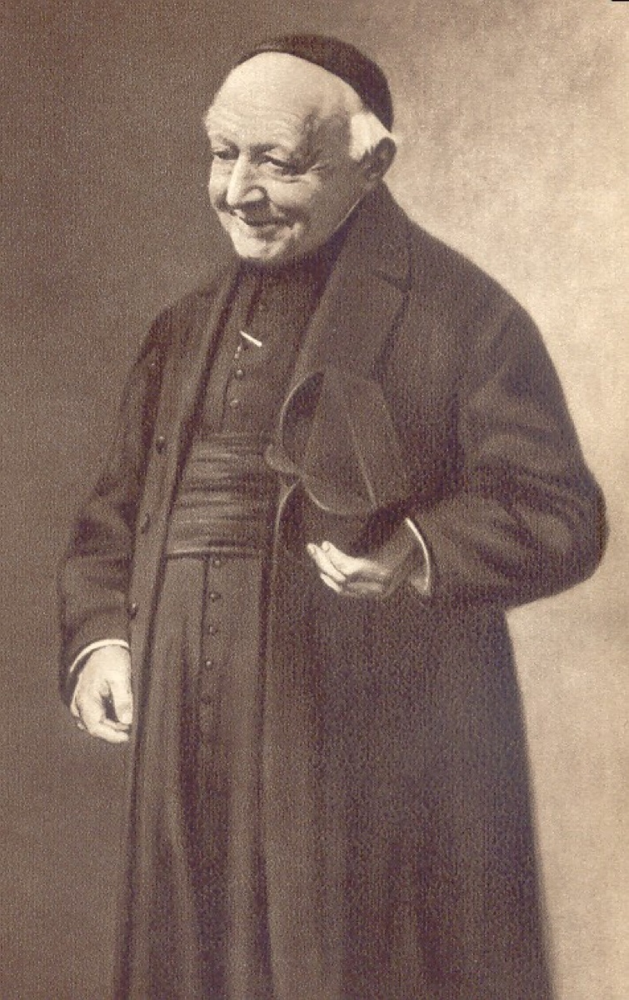

Časni sluge Božji
Svećenik
Časni sluga Božji Adolf Petit
1822. – 1914.
Belgijski isusovac iz Genta gotovo je pola stoljeća u Drongenu odgajao mlade redovnike i vodio duhovne vježbe za svećenike, redovnike i laike. Bio je cijenjen duhovni vođa, poznat po jednostavnosti i blizini siromašnima.
Tekst je sažet i prilagođen uz pomoć umjetne inteligencije.

Izvor slike
- Spomendan
- 20. svibnja
- Zaštitništvo
- Nije navedeno u izvoru
- Životni vijek
- 1822. – 1914.
- Djelovanje
- Obrazovanje i poučavanje vjere · Duhovno vodstvo i razlučivanje · Siromašni i isključeni
- Razdoblje
- 19., 20. stoljeće
- Crkveni naslov
- Časni sluga Božji
- Rođenje
- 22. svibnja 1822., Gent, Belgija
- Država rođenja
- Belgija
- Datum smrti
- 20.05.1914.
- Mjesto smrti/mučeništva
- Drongen (Tronchiennes), Belgija
- Uloga
- Svećenik
- Mučenik
- Ne
- Ostale oznake
- Časni sluga Božji – nema liturgijskog spomendana; u direktoriju naveden na dan smrti.
- Pripadnost
- Isusovac
- Drugi oblici imena
- Adolphe Petit · Adolphe
- Priznanje herojskih kreposti
- 15. prosinca 1966., Pavao VI.
- Počivalište
- Kapela sv. Josipa na prostoru Stare opatije, Drongen
U kalendaru zbirke naveden je dan smrti.
Životopis
Adolf Petit rođen je 22. svibnja 1822. u Gentu, u skromnoj krojačkoj obitelji iz jedne od gradskih pučkih četvrti. Majku je izgubio kad mu je bilo pet godina, a kako se otac nije mogao brinuti za djecu, prihvatio ga je kum. Pohađao je seosku školu i već s dvanaest godina počeo raditi kao pomoćnik graditelja klavira.
Prekretnica je došla preko jedne gospođe koju je upoznao dok je molio u marijanskom svetištu gentske katedrale: ona mu je omogućila stipendiju za isusovački kolegij sv. Barbare u Gentu, gdje je počeo školovanje 1836. U rujnu 1842. ušao je u novicijat u Drongenu. Nakon zavjeta studirao je filozofiju u Namuru, četiri godine predavao u Antwerpenu, a teologiju završio u Leuvenu. Za svećenika je zaređen 15. rujna 1855., a treću probaciju obavio je u Drongenu.
Prve godine svećeništva proveo je kao nastavnik u kolegiju sv. Mihaela u Bruxellesu, a zatim kao duhovnik mladih isusovaca u Namuru. Godine 1865. trajno se vratio u Drongen, gdje je gotovo pola stoljeća pratio novozaređene svećenike i studente Družbe. Duhovne vježbe postale su njegovo glavno poslanje: okupljao je redovnice i redovnike, dijecezanske svećenike i laike, priređivao godišnje duhovne obnove za kler i objavio nekoliko svezaka razmatranja i nagovora.
Bio je poznat po jednostavnosti i toplini, a siromašni i potrebiti uvijek su kod njega nalazili otvorena vrata. Sudjelovao je u nastanku briselskoga djela Oeuvre du Calvaire, koje se skrbilo za neizlječivo bolesne prepuštene samima sebi. Među onima koje je duhovno vodio bio je i irski isusovac Willie Doyle, tijekom svoje treće probacije 1907. i 1908. U svibnju 1914. obolio je od bronhalne upale pluća i preminuo u ranim jutarnjim satima 20. svibnja 1914.
Život i nasljeđe
Petit je najprije pokopan na tadašnjem groblju uz župni dvor u Drongenu. Zahvalni bivši sudionici duhovnih vježbi i njegova subraća ubrzo su počeli širiti njegovo štovanje, a o njegovu životu napisano je više životopisa. Postupak za proglašenje blaženim pokrenut je 1937., kada je dobio naslov sluge Božjega. Iste je godine na zemljištu Stare opatije u Drongenu podignuta kapela posvećena sv. Josipu, u koju su njegovi posmrtni ostatci svečano preneseni u nazočnosti gentskoga biskupa. Kada je lijes 1938. otvoren, tijelo je pronađeno neraspadnuto, što su mnogi shvatili kao znak svetosti.
Dekret o herojskim krepostima proglašen je 15. prosinca 1966. u nazočnosti pape Pavla VI., zajedno s dekretima za još petero slugu Božjih, među kojima su bili Ivan Marija de la Mennais i Gašpar Bertoni. Time je Petit postao časni sluga Božji. Štovanje je s vremenom oslabilo, a prema drongenskim izvorima postupak je 1992. zaustavljen. Njegov utjecaj ipak se prenosio preko onih koje je odgajao: biografi Willieja Doylea djelomično pripisuju formaciji u Drongenu Doyleovu kasniju djelotvornost u vođenju duhovnih vježbi i u službi vojnoga kapelana.
Tekst je sažet i prilagođen uz pomoć umjetne inteligencije.
Pročitaj više na izvornoj stranici ↗